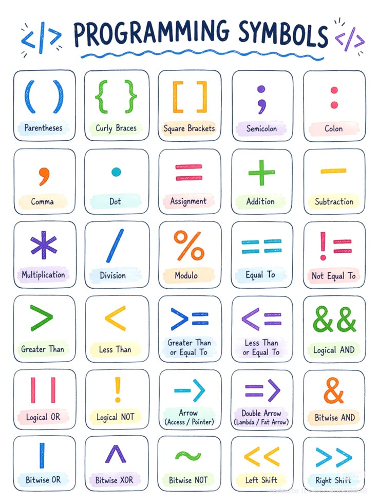

IFT 203 - Introduction to Web Technologies
Web Technologies are the tools,programming languages,protocols and techniques used to maintain websites and web applications.
| Web Technology | Meaning | Function |
| HTML | Hyper Text Markup language | Creates webpage structure |
| CSS | Cascading Style Sheet | Control webpage appearance |
| JavaScript | Programming Language | Add interactivity |
| PHP | Hypertext Preprocessor | Handles server-side operations |

Web technologies plays an important role in mordern communicate and information sharing.They provide the tools needed to build functional websites and web applications.